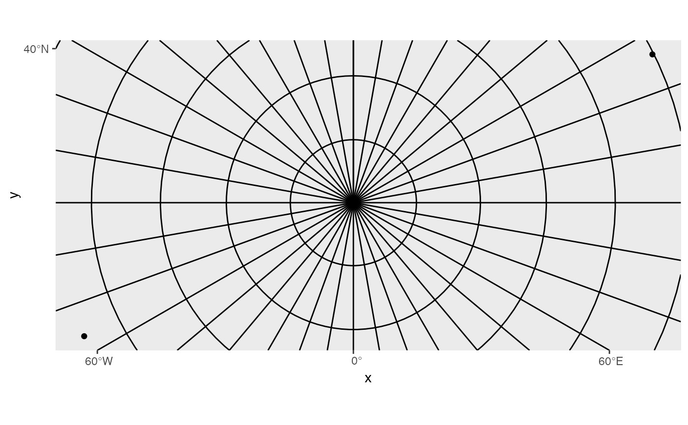

Projected horizontal and vertical lines
annotation_spatial_hline(
mapping = NULL,
data = NULL,
stat = "identity",
...,
intercept = waiver(),
limits = NULL,
detail = 100,
crs = NULL,
na.rm = FALSE,
show.legend = NA
)
annotation_spatial_vline(
mapping = NULL,
data = NULL,
stat = "identity",
...,
intercept = waiver(),
limits = NULL,
detail = 100,
crs = NULL,
na.rm = FALSE,
show.legend = NA
)
GeomSpatialXlineAn object of class GeomSpatialXline (inherits from GeomHline, Geom, ggproto, gg) of length 4.
An aesthetic mapping created with ggplot2::aes().
A data frame or other object, coerced to a data.frame by ggplot2::fortify().
Statistical transformation to use on this layer. See ggplot2::layer().
Passed to the combined stat/geom as parameters or fixed aesthetics.
The x or y value that should be constant in the given
crs. Can also be passed as an aesthetic through data and mapping.
Use NULL to guess the minimum and maximum x or y value in
the non-constant dimension, or specify a vector of length 2 to specify
manually.
The number of points that should be used when converting the line into segments.
The crs of the x and y aesthetics, or NULL to use default lon/lat crs (with a message).
Should missing aesthetic values be removed?
Should the legend be shown?
cities <- data.frame(
x = c(-63.58595, 116.41214, 0),
y = c(44.64862, 40.19063, 89.9),
city = c("Halifax", "Beijing", "North Pole")
)
p <- ggplot(cities, aes(x, y, label = city)) +
geom_spatial_point(crs = 4326) +
# view of the north pole
coord_sf(crs = 3995)
p +
# longitude lines
annotation_spatial_vline(
intercept = seq(-180, 180, by = 10),
crs = 4326
) +
# latitude lines
annotation_spatial_hline(
intercept = seq(0, 90, by = 10),
crs = 4326
)
